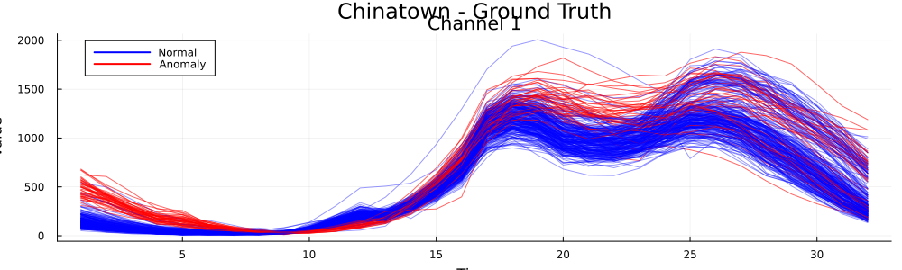
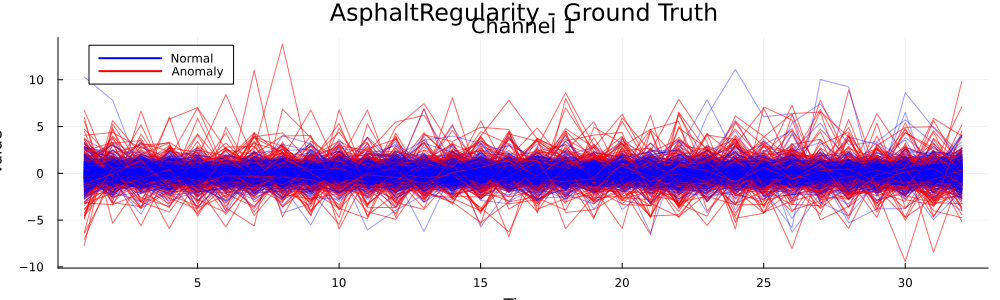
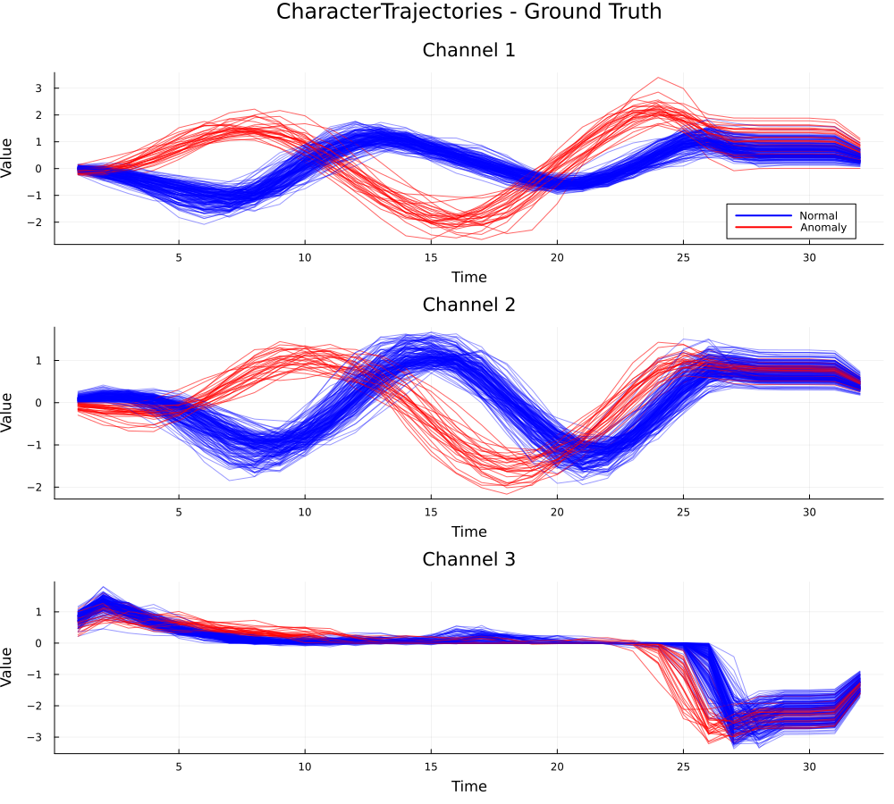

| Method | Precision | Recall | F1 | Accuracy | TP | TN | FP | FN |
|---|---|---|---|---|---|---|---|---|
| depth.FM | 0.6585 | 0.6 | 0.6279 | 0.8933 | 27 | 241 | 14 | 18 |
| depth.RP | 0.3725 | 0.4222 | 0.3958 | 0.8067 | 19 | 223 | 32 | 26 |
| depth.RPD | 0.4744 | 0.8222 | 0.6016 | 0.8367 | 37 | 214 | 41 | 8 |
| depth.RT | 0.2887 | 0.6222 | 0.3944 | 0.7133 | 28 | 186 | 69 | 17 |
| depth.mode | 0.7073 | 0.6444 | 0.6744 | 0.9067 | 29 | 243 | 12 | 16 |
| WICMAD raw | 0 | 0 | 0 | 0.85 | 0 | 255 | 0 | 45 |
| WICMAD raw+d1 | 0 | 0 | 0 | 0.63 | 0 | 189 | 66 | 45 |
| WICMAD raw+d1+d2 | 0 | 0 | 0 | 0.8467 | 0 | 254 | 1 | 45 |

| Method | Precision | Recall | F1 | Accuracy | TP | TN | FP | FN |
|---|---|---|---|---|---|---|---|---|
| depth.FM | 0.7704 | 0.7761 | 0.7732 | 0.9317 | 104 | 728 | 31 | 30 |
| depth.RP | 0.5061 | 0.6194 | 0.557 | 0.8522 | 83 | 678 | 81 | 51 |
| depth.RPD | 0.7862 | 0.8507 | 0.8172 | 0.9429 | 114 | 728 | 31 | 20 |
| depth.RT | 0.5801 | 0.7836 | 0.6667 | 0.8824 | 105 | 683 | 76 | 29 |
| depth.mode | 0.8248 | 0.8433 | 0.8339 | 0.9496 | 113 | 735 | 24 | 21 |
| WICMAD deriv | 0.2566 | 0.8657 | 0.3959 | 0.6036 | 116 | 423 | 336 | 18 |
| WICMAD raw | 0.3704 | 0.9701 | 0.5361 | 0.748 | 130 | 538 | 221 | 4 |

| Method | Precision | Recall | F1 | Accuracy | TP | TN | FP | FN |
|---|---|---|---|---|---|---|---|---|
| depth.FMp | 0.9355 | 0.9667 | 0.9508 | 0.985 | 29 | 168 | 2 | 1 |
| depth.RPp | 1 | 0.9667 | 0.9831 | 0.995 | 29 | 170 | 0 | 1 |
| fdaoutlier.msplot | 0.15 | 1 | 0.2609 | 0.15 | 30 | 0 | 170 | 0 |
| mrfDepth.fOutl | 0.3944 | 0.9333 | 0.5545 | 0.775 | 28 | 127 | 43 | 2 |
| WICMAD raw | 1 | 1 | 1 | 1 | 30 | 170 | 0 | 0 |